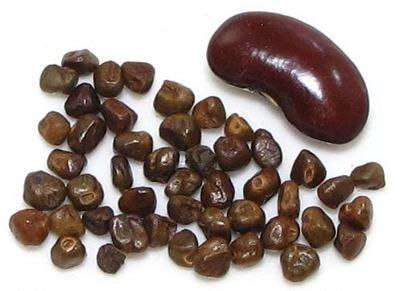

Korarima

[Ethiopian Cardamom, False Cardamom; Aframomum corrorima (Ginger
family)]
When Ethiopian or Eritrean recipes call for Cardamom, this is what they
really mean. This plant is native to Tanzania, western Ethiopia, southwestern
Sudan and western Uganda. In much of its range it is gathered in the wild,
but it is cultivated in Ethiopia and Eritrea.
While the Korarima plant is
closely related to the common Green
Cardamom, the fig shaped pods are much larger, as are the seeds within
them. The photo specimen seeds were about 0.165 inch (4.2 mm) long.
More on Gingers.
More on Spices.
Buying:
This spice can be found on-line from spice vendors,
particularly those specializing in Ethiopian foods. They can also be found
in Ethiopian markets in North America, if you can find one of those.
The photo specimens were from Brundo Spice Company and cost 2021 Us $5.50
per ounce.
Subst:
The best substitute is the common
Green Cardamom. While the size of the
seeds is much different, the flavor is very similar. Some writers say to
substitute Indian Black Cardamom, which has larger pods and larger seeds, but
its flavor is much different.
gg_korarz 210405 - www.clovegarden.com
©Andrew Grygus - agryg@clovegaden.com - Photos on this
page not otherwise credited are © cg1 -
Linking to and non-commercial use of this page permitted